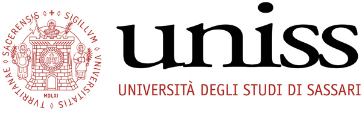
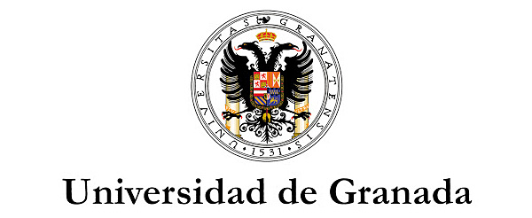
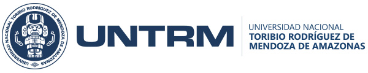
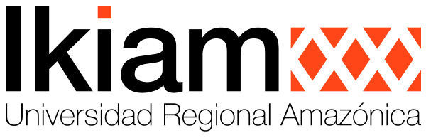

Master in Climate Change, Agriculture and
Sustainable Rural Development- MACCARD
El Proyecto “Master en Cambio Climático, Agricultura y Desarrollo Rural Sostenible” -MACCARD- tiene como objetivo mejorar la oferta de formación de educación superior en temas urgentes, comunes a dos países vecinos de América Latina, Ecuador y Perú, mediante la implementación de un Master interuniversitario en Cambio Climático, Agricultura y Desarrollo Rural Sostenible en las Universidades de Toribio Rodríguez de Mendoza (UNTRM) y Universidad Nacional de Jaén (UNJ) en el Perú, la Universidad Regional Amazónica Ikiam (Ikiam) y la Universidad del Azuay (UAZUAY) en el Ecuador, al tiempo que se mejora la calidad de la enseñanza y se contribuye a fortalecer la cooperación transfronteriza entre las instituciones de enseñanza superior del Ecuador y el Perú y entre éstas y los países del Programa de la UE.
En el proyecto participan: la Universidad de Sassari (UNISS, IT) como coordinadora y la Universidad de Granada (UGR, ES) como institución de enseñanza superior del país del programa europeo. Un nuevo Máster sobre el cambio climático, centrado en la agricultura y el desarrollo sostenible, en cada universidad local, tanto en el Ecuador como en el Perú, contribuirá a crear los conocimientos especializados necesarios y a desarrollar profesionales capaces de realizar estudios y de planificar y aplicar medidas fiables para responder a los desafíos y amenazas del cambio climático en sectores cruciales. El proyecto se desarrollará llevando a cabo las siguientes etapas:
- Una evaluación actualizada de las necesidades de los programas de estudio de las universidades latinoamericanas involucradas en relación con el cambio climático, la agricultura y el desarrollo rural sostenible (CCARSD);
- Dependiendo de los resultados del paso anterior, se definirá una nueva Maestría en CCARSD;
- Se pondrá en marcha un nuevo entorno de aprendizaje electrónico y los profesores de las instituciones de enseñanza superior de la Unión Europea crearán nuevos materiales de aprendizaje electrónico que se cargarán en la plataforma interactiva de aprendizaje;
- 32 profesores locales participarán en una formación activa en la que aprenderán nuevas metodologías de enseñanza en el ámbito del CCARSD para aplicarlas en el nuevo máster;
- Se implementará una nueva Maestría en cada una de las Universidades Asociadas en Ecuador y Perú dirigida a un total de 60 estudiantes. Los estudiantes y profesores de la maestría participarán en actividades de intercambio y movilidad.

The University of Sassari (Italy) is the Coordinator of MACCARD Project.
The University of Sassari has promoted its international dimension since its foundation in 1562, when, during the reign of Philip II in the last year of the Council of Trent, «the Jesuit College» was created under the auspices of Alessio Fontana, a collaborator of the then Emperor Charles V.
Holding to its historical roots, the University is now starting its journey to become a reformed public University, within a more competitive and global international system, inspired by the principles of autonomy and responsibility; it is aware of the richness and complexity of academic traditions and the value of diverse identities. It is choosing a sound organization, it fosters the democratic methodology in the election of its administrative bodies, it promotes the training of young people and protects the right to education; and it places the student at the heart of its academic policies, thus promoting culture as a collective value. It champions the constitutional values set for HEI’s, the freedom to pursue one’s own study, research and teaching careers, ensuring all appropriate and necessary conditions to make them effective. In agreement with the other autonomous institutions, it undertakes to promote the sustainable development of Sardinia and to transfer knowledge across the territory, working for its cultural, civil, economic and social progress.
Link to the web site: https://www.uniss.it/

The University of Granada (Spain) is a European Partner of MACCARD Project.
The University of Granada, since its fundation in 1531, has come to life in symbiosis with society, to become today a benchmark for the quality of its teaching and research and for its university extension activities with special consideration in cooperation with development.
Link to the web site: https://www.ugr.es/

The Nacional University of Toribio Rodriguez de Mendoza is a Peruvian Partner og MACCARD Project.
The University was created by Law No. 27347 of September 18, in 2000 and began its academic activities in June 2001. It is one of the fastest growing public universities in recent decades. Its impact on people, in its region and in Peru is profound. Its activities have been characterized by the drive for innovation and development.
Link to the website: https://www.untrm.edu.pe/es/
La Universidad Nacional Toribio Rodríguez de Mendoza de Amazonas (UNTRM) fue creada mediante Ley N° 27347 del 18 de septiembre de 2000 e inició sus actividades académicas en junio de 2001.
La Universidad Nacional Toribio Rodríguez de Mendoza de Amazonas (UNTRM) es una de las universidades públicas de más alto crecimiento de las últimas décadas, nuestro impacto en las personas, en nuestra región y en el Perú es profundo, pues hemos sido desafiantes, caracterizándonos por el impulso a la innovación y el desarrollo.
The Nacional University of Jaen is a Peruvian Partner of MACCARD Project.
The creation of the National University of Jaén is an achievement that must be attributed to all organized citizens, who had a common goal: the creation of a Public University for the professional studies of young people in Jaén, and aimed at addressing the problems of its region in all its dimensions. The National University of Jaen is a young University that has opened its doors to students for the first time in May 2012. It is an academic community oriented to research and teaching, which provides professional, humanistic, scientific and technological training to students with social responsibility, innovation, competitiveness, entrepreneurship to contribute to the sustainable development of the country.
Link to the web site: https://unj.edu.pe/
La creación de la Universidad Nacional de Jaén es un logro que se debe atribuir a todos aquellos ciudadanos organizados, que tuvieron un objetivo en común: la existencia de una Universidad Pública para los estudios profesionales de los jóvenes de Jaén, y atender la problemática de la región en todas sus dimensiones.
La Universidad Nacional de Jaen es una Universidad joven que ha abierto sus puertas a los estudiantes por primera vez en el mes de mayo de 2012.
Se trata de una comunidad academica orientada a la investigacion y a la docencia, que brinda formacion profesional, humanistica, cientifica y tecnologica a los estudiantes con responsabilidad social, innovacion competitividad, emprendimiento para contribuir al desarrollo sostenible del Pais.

The Regional Amazon University is an Ecuadorian Partner of MACCARD Project.
Under the firm conviction of guaranteeing the right to a quality higher education, which aims at excellence, universal access, permanence, mobility and graduation, without any discrimination, the idea of "IKIAM" (meaning "jungle" in the Shuar language) was conceived as an institution of higher education, destined to contribute to the transformation of the social, productive and environmental structure, to train professionals and academics with capacities and knowledge that respond to the growing needs linked to national and international development and to the construction of citizenship.
IKIAM, based in Napo Province, opened its doors to students in October 2014. Nature is the fundamental pillar for the Academy, since its strategic location, in the heart of the Amazon, makes it the only higher education institution, with a living laboratory, such as the Colonso Chalupas biological reserve; Its biodiversity and ecosystems make it an invaluable source for research and development of innovative projects, of which its main actors are Ikiam's students.
Link to the website: https://www.ikiam.edu.ec/
Bajo la firme convicción de garantizar el derecho a una educación superior de calidad, que propenda a la excelencia, acceso universal, permanencia, movilidad y egreso, sin discriminación alguna, tuvo lugar la idea de “Ikiam” (significa “selva” en lengua shuar) concebida como una institución de educación superior, destinada a contribuir a la transformación de la estructura social, productiva y ambiental, para formar profesionales y académicos con capacidades y conocimientos, que respondan a las crecientes necesidades vinculadas al desarrollo nacional e internacional y a la construcción de ciudadanía.
Ikiam, ubicada en la provincia de Napo, a 7 kilómetros de su capital, San Juan de los dos ríos de Tena, abrió sus puertas a los estudiantes, en octubre de 2014.
La riqueza natural, es el pilar fundamental para la Academia, puesto que, su ubicación estratégica, en el corazón de la Amazonía, la convierte en la única institución de educación superior, con un laboratorio vivo, como es la reserva biológica Colonso Chalupas ; su biodiversidad y ecosistemas, la convierten en una fuente invaluable para la investigación y el desarrollo de proyectos innovadores, de los cuales, sus principales actores son los discentes y docentes de Ikiam.
The University of Azuay is an Ecuadorian Partner of MACCARD Project.
The University of Azuay was born in 1968 and is based in the city of Cuenca, capital of the province of Azuay. In its beginnings it was part, first, of the Catholic University Santiago de Guayaquil and, later, of the Pontifical Catholic University of Ecuador.
In 1990, after complying with all legal requirements, it was recognized as the University of Azuay, through the Law of the Republic. In 2006, it became the first Ecuadorian university to achieve the accreditation by the National Council for Evaluation and Accreditation, CONEA.
The Universidad del Azuay offers undergraduate training through its twenty-eight schools distributed in six faculties. Postgraduate training is offered through master's degrees and specializations, the academic offer responds to the needs identified in the region and in the country framed in the commitment to serve society.
The University of Azuay trains people with critical thinking, ethically committed to society, and contributes to science and knowledge to achieve a comprehensive development.
Link to the website: https://www.uazuay.edu.ec/
La Universidad del Azuay nació en 1968 y tiene su sede en la ciudad de Cuenca, capital de la provincia del Azuay. En sus inicios fue parte, primero, de la Universidad Católica Santiago de Guayaquil y, luego, de la Pontificia Universidad Católica del Ecuador. En 1990 luego de cumplir con todos los requisitos legales fue reconocida como Universidad del Azuay, mediante Ley de la República.
En el año 2006 se constituyó en la primera universidad ecuatoriana en lograr la acreditación por parte del Consejo Nacional de Evaluación y Acreditación, CONEA.
La Universidad del Azuay ofrece formación de grado a través de sus veintiocho escuelas distribuidas en seis facultades. La formación de posgrados se ofrece a través de maestrías y especializaciones, la oferta académica responde a las necesidades identificadas en nuestra región y país enmarcada en el compromiso de servir a la sociedad. Somos una Comunidad Universitaria que formamos personas con pensamiento crítico, comprometida éticamente con la sociedad, que aporta a la ciencia y al conocimiento para lograr el desarrollo integral de nuestro entorno.